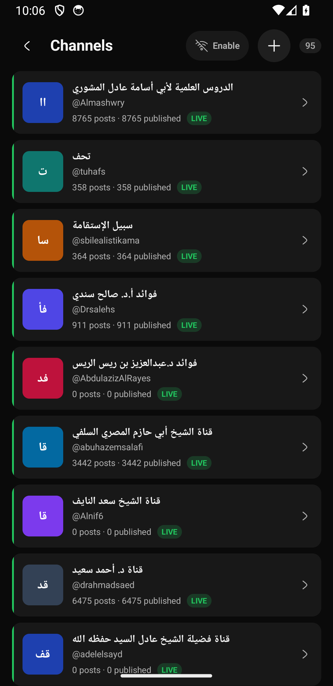
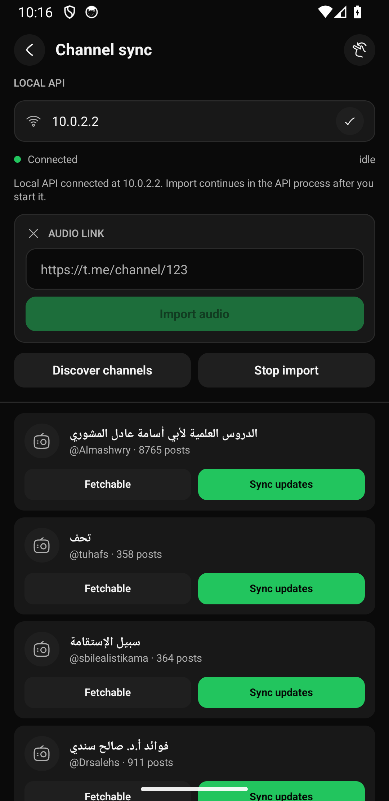

A reviewable flow for finding Telegram channels that exist on the connected account but not yet in Al‑Ghurobaa, selectively adding them to the database, then opening their chat.
Entry: Channels → +Source: connected Telegram accountDefault filter: not in databasePrototype: simulated local data
Observed on Pixel 3a · Android 14
The current UI starts one step too late.
The existing Channels screen is strong for browsing database-backed channels. Its `+` opens “Channel sync,” where “Discover channels” is a bulk action and the visible list already represents database records.
×No search across all channels on the Telegram account.
×No explicit “not added yet” result state.
×No selective add-to-database confirmation before syncing posts.
Current · Channels

Current · Channel sync

Three directions
Same task, different commitment.
Try the search, channel selection, add, and review controls. Every option uses the app’s current black, charcoal, and green visual language.
01
Dedicated picker Recommended
A focused, searchable screen that defaults to channels not yet in the database. It supports single or batch selection, then makes “add” and “sync chats” visibly separate stages.
Best for 1–20 additionsClearest mental model
10:18◒ 5G ▣
Add channels
ACCOUNT
Simulated local account data
↗
Telegram connected95 channels · checked just now
مس
منهج السلف@AlsalafWay · 12.4K subscribers
فع
فوائد الشيخ عبدالرزاق البدر@al_badr · 8.1K subscribers
إق
إذاعة القرآن@quran_radio · 42K subscribers
مط
مكتبة طالب العلم@knowledge_lib · 5.7K subscribers
دم
دروس المسجد@masjid_lessons · 3.2K subscribers
Adding 2 channels
✓Saved channel records
✓Enabled chat fetching
·Syncing recent chats
02
Search-first sheet
The `+` opens a large bottom sheet over the existing Channels list. Search is immediate, each result has its own Add action, and successful rows become “Open chat.”
Fastest for one channelWeakest for batches
10:18◒ 5G ▣
Channels
Find a channel
Only showing channels not in your library
فع
فوائد الشيخ عبدالرزاق البدر@al_badr
فد
فوائد من دروس العلماء@lesson_notes
مس
منهج السلف@AlsalafWay
Adding saves the channel first. Chat sync continues in the background and does not block opening the channel.
03
Discovery inbox
A scan produces an inbox grouped into New, Already added, and Unavailable. The user reviews the batch before writing anything to the database.
Best for account auditsMost steps
10:18◒ 5G ▣
Channel discovery
Simulated scan result
↻
Account scan complete
Compared Telegram account channels with the local database.
95account
8new
87added
New channels · 8
مس
منهج السلف@AlsalafWay
NEW
فع
فوائد الشيخ عبدالرزاق@al_badr
NEW
إق
إذاعة القرآن@quran_radio
NEW
مط
مكتبة طالب العلم@knowledge_lib
NEW
Review channel import
These records will be added to the database. Recent chats sync afterward.
منهج السلف@AlsalafWay
فوائد الشيخ عبدالرزاق@al_badr
Added. Open either channel from Channels.
Recommendation
Choose 01: Dedicated picker.
It matches the existing full-screen Channels navigation, makes database membership explicit, and scales from one channel to a moderate batch without turning discovery into an admin workflow.
Channels→Add channels→Search account→Select→Add to database→Open chat
Key product rules
Default to Not added; never hide the All/Added context.
Adding a channel and syncing recent chats are distinct stages.
After save, expose Open chat even if history is still syncing.
Keep the existing update/sync screen for channels already in the database.